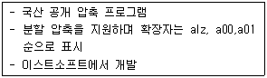

인터넷정보관리사-2급 (2010-06-12 기출문제)
1과목: 인터넷의 이해
1. 인터넷의 특징으로 옳지 않은 것은?
- 시간과 공간의 제약이 없다.
- 전세계 누구나 쉽고 빠른 정보의 교환이 가능하다.
- 네트워크 관리를 위해 중앙에서 통제를 받는다.
- 다양한 서비스를 똑같이 이용할 수 있다.
(정답률: 93%)

2. 다음 중 오늘날 널리 이용되는 인터넷의 효시는 무엇인가?
- Client network
- ARPANET
- Intranet
- DNIS
(정답률: 77%)
3. 국내 인터넷의 역사적인 내용으로 가장 적합하지 않은 것은?
- 우리나라 인터넷 시초는 1982년 서울대에서만 FTP, TELNET 등을 이용한 것이다.
- 1987년 KREONet(연구망)과 KREN(교육망)이 구축되었다.
- 1990년 HANA망이 설립되었다.
- 1994년 상업망 시대의 원년으로 본격적인 상용 접속 서비스가 제공되었다.
(정답률: 55%)
4. W3C와 WWW(World Wide Web)에 대한 설명 중 틀린 것은?
- W3C는 WWW와 관련된 표준안의 제작 및 새로운 표준안을 제안하는 기구이다.
- WWW에 대한 기술 표준은 W3C와 IETF에서 담당하고 있다.
- JAVA의 WWW와 관련된 표준화 작업은 W3C가 담당하였다.
- W3C는 현재 당장 필요한 기술의 표준화를 주로 담당한다.
(정답률: 53%)
5. 한국인터넷진흥원(KISA)에 대한 설명으로 옳지 않은 것은?
- 2009년 7월 23일 새롭게 출범하였다.
- 영문명은 Korea Information Security Agency 이다.
- 주요사업은 인터넷 주소관리, 인터넷 침해 대응, 이용자 보호 등이다.
- 기존 한국정보보호진흥원, 한국인터넷진흥원, 정보통신국제협력진흥원이 통합되었다.
(정답률: 43%)
6. 인터넷 관련 문서 RFC(Requset for Comments : 해설요구문서)에 대한 설명으로 옳지 않은 것은?
- 컴퓨터 통신 및 인터넷과 관련된 상세한 절차와 표준 규격을 제시한 문서이다.
- 출판된 RFC는 내용에 따라 언제나 삭제 하거나 변경할 수 있다.
- RFC 내용은 RFC 번호, 문서의 범주, STD 번호 또는 FYI 번호 등이다.
- RFC 문서는 인터넷 사이트에서 번호, 제목, 키워드 등으로 검색 가능하다.
(정답률: 71%)
7. 도메인 이름의 선정 원칙에 대한 설명으로 가장 옳지 않은 것은?
- 도메인 이름은 영문자(A~Z, a~z), 숫자(0~9) 또는 하이픈(-)의 조합으로만 표현한다.
- 영어로 시작해야 하며, 하이픈(-)으로 끝날 수 있다.
- 도메인 이름에 콤마(,), 언더바(_) 등의 기호를 사용할 수 없다.
- 도메인 이름은 전세계적으로 중복되지 않는 고유한(Unique) 주소로 사용된다.
(정답률: 57%)
8. 국내 도메인 구조에서 7개의 2단계(차상위) 도메인 기관의 구분으로 옳지 않은 것은?
- co - 영리단체
- or - 비영리기관
- re - 네트워크 관리기관
- pe - 개인
(정답률: 43%)
9. 해외 도메인 구조에서 최상위 도메인(TLD)의 생성에 관한 설명으로 옳지 않은 것은?
- com - 일반 기업체 영리기관
- mil - 군사
- edu - 교육
- int - 인터넷 관련 기관
(정답률: 43%)
10. 인터넷 주소 체계에서 IP 어드레스 범위가 129.121.10.10은 어떤 클래스(Class) 등급에 해당되는가?
- A 클래스
- B 클래스
- C 클래스
- D 클래스
(정답률: 40%)
11. 전자우편의 주소 형식으로 옳지 않은 것은?
- 사용자ID@호스트 도메인
- 사용자ID@도메인 네임
- 사용자ID@개인PC 이름
- 사용자ID@IP 주소
(정답률: 50%)
12. 메일링 리스트의 본문에 쓰는 용어의 내용과 다른 것은?
- subscribe : 특정메일링 리스트에 탈퇴할 때
- lists : 메일링 서버에서 운영하는 리스트 목록을 얻으려 할 때
- info : 특정 메일링 리스트의 주제를 알려고 할 때
- who : 메일링 리스트의 그룹 명단을 얻으려 할 때
(정답률: 62%)
13. FTP에 대한 전반적인 내용으로 틀린 것은?
- 특정 시스템에서 다른 시스템으로 파일을 복사하기 위한 파일 전송 프로토콜이다.
- FTP 서버의 호스트 이름으로 FTP를 사용하는 것이 일반적이다.
- Anonymous FTP 서버는 익명으로 접속하여 자유롭게 파일을 수신 서비스를 제공한다.
- 미러 사이트 FTP 서버는 접속은 적고 특정한 사용자만이 접속 가능한 서비스를 제공한다.
(정답률: 48%)
14. FTP 주요 명령어에 설명으로 틀린 것은?
- ls는 파일 및 디렉토리의 목록을 표시
- dir은 파일 및 디렉토리에 대한 권한 설정과 목록을 자세히 출력
- mget은 파일에 접속하기 위한 패스워드
- cd는 원격 컴퓨터 시스템에서 디렉토리 이동시 사용
(정답률: 63%)
15. 유즈넷의 특징에 대한 설명으로 틀린 것은?
- 유즈넷은 뉴스 그룹들로 구성되어 있다.
- 통제력을 갖는 조직과 인력이 존재한다.
- 누구나 뉴스 그룹에 게시된 기사를 읽어 볼 수 있다.
- 토론의 장인 동시에 게시판(BBS) 역할을 한다.
(정답률: 70%)
16. 뉴스 그룹에서 국가 및 주 이름의 그룹명 중 단축어로 옳지 않은 것은?
- kor : 한국
- jp : 일본
- can : 캐나다
- uk : 영국
(정답률: 72%)
17. 메신저의 특징으로 가장 옳지 않은 것은?
- 텍스트 파일만 전송 가능
- 참여자들끼리 실시간으로 응답
- 시간과 공간의 제한없이 실시간 대화
- 자신의 신분을 드러내지 않고 닉네임을 사용
(정답률: 77%)
18. 전자상거래의 장점에 해당되지 않는 것은?
- 시간과 공간에 제약을 받지 않는다.
- 반품과 환불이 off-line 쇼핑보다 매우 어렵다.
- 쇼핑 비용을 절약할 수 있다.
- 소비자들은 정보수집과 가격비교 등을 쉽게 할 수 있다.
(정답률: 79%)
19. 전자상거래의 전자지불 시스템 방식과 종류가 옳지 않는 것은?
- 신용카드 지불 - SET, STT, SEPP 등
- 은행계좌이체 - 전자화폐시스템
- 네트워크형 - E-Cash, CyberCash 등
- IC 카드형 - 아이캐시
(정답률: 31%)
20. 다음 중 공공기관의 개인정보보호에 관한 법률의 적용을 받지 않는 정보에 해당되지 않는 것은?
- 정보주체의 동의가 있거나 정보주체에게 제공하는 경우
- 조약 기타 국제협정의 이행을 위하여 외국 정부 또는 국제기구에 제공하는 경우
- 통계작성 및 학술연구 등의 목적을 위해 개인정보를 제공하는 경우
- 범죄의 수사와 공소의 제기 및 유지에 필요한 경우
(정답률: 50%)
21. 컴퓨터 프로그램보호법의 용어 정의로 적합하지 않은 것은?
- 프로그램 저작자 : 컴퓨터프로그램저작물을 창작한 사람
- 복제 : 프로그램을 유형물에 고정시켜 새로운 창작물을 더하지 아니하고 다시 제작하는 행위
- 개작 : 원 프로그램의 일련의 지시 명령의 전부 또는 상당 부분을 이용하여 새로운 프로그램을 창작하는 행위
- 공표 : 공중의 수요에 응하기 위하여 프로그램을 복제ㆍ배포하는 행위
(정답률: 62%)
22. 저작권법에 보호받지 못하는 저작물에 해당 되지 않는 것은?
- 지도, 도표, 설계도, 약도, 모형 그 밖의 도형 저작물
- 헌법, 법령, 조약, 명령 조례 및 규칙
- 사실의 전달에 불과한 시사보도
- 공개된 법정, 국회 또는 지방의회에서의 연설
(정답률: 39%)
23. 웹문서 작성시 네티켓에 해당되지 않는 것은?
- 원하는 정보의 접근이 용이하도록 메뉴를 구성한다.
- 가장 좋은 화질의 동영상을 제공하는 것을 최우선으로 고려한다.
- 홈페이지의 최근 업데이트 날짜를 적어준다.
- 웹 페이지의 첫 화면에서 자신의 사이트의 개괄적인 안내를 해준다.
(정답률: 67%)
24. FTP 사용시 네티켓이 아닌 것은?
- 파일을 송수신할 때는 업무시간을 피해서 하는 것이 좋다.
- 파일을 올릴 때는 사전에 바이러스 검사를 철저히 하고 동일한 파일이 있는지 확인한다.
- 상용 프로그램인지 아닌지를 확인하고 비상용 프로그램만 송수신하여야 한다.
- 불필요한 접속을 삼가하여 서버의 부담을 줄인다.
(정답률: 7%)
25. 전자우편의 네티켓이 아닌 것은?
- 개인적인 내용은 메일 본문에 절대 포함하지 않는다.
- 용량이 큰 파일은 반드시 압축하여 첨부시키고 바이러스 감염여부를 꼭 확인한다.
- 전자우편은 자주 점검하고 꼭 저장해야 하는 자료 외에는 가급적 삭제한다.
- E-Mail 주소가 정확한지 확인하고 스팸 메일 등 불필요한 내용은 보내지 않는다.
(정답률: 63%)
26. 저작자의 권리와 이에 인접하는 권리를 보호하고 저작물의 공정한 이용을 도모함으로써 문화의 향상 발전을 목적으로 하는 법은?
- 저작권법
- 컴퓨터프로그램보호법
- 정보통신윤리강령
- 통신비밀보호법
(정답률: 77%)
27. 기억 장치에서 램(RAM)에 대한 설명으로 맞는 것은?
- 판독전용 기억장치로 일반적으로 컴퓨터 생산자가 공급한다
- 임의접근 기억장치로 읽기 쓰기가 가능한 일반적인 주기억장치이다.
- 전원이 꺼져도 저장되어 있는 내용이 절대 지워지지 않는 비소멸성 장치이다.
- 특별한 용도로만 한정적으로 사용되며 읽기는 가능하나 쓰기는 불가능하다.
(정답률: 43%)
28. 컴퓨터 바이러스의 일반적인 증상으로 옳지 않은 것은?
- 프로그램의 크기가 점점 커진다.
- 웹브라우저의 속도가 빨라진다.
- 디스크의 일부 또는 전부가 초기화된다.
- 컴퓨터를 부팅하는 시간이 평소보다 오래 걸린다.
(정답률: 80%)
29. 외부로부터 입력되는 일련의 데이터들을 모아 두었다가 일정한 시간이 되면 이들 작업들을 미리 정해진 순서에 따라 차례대로 처리하는 방식은?
- 다중처리
- 시분할처리
- 다중 프로그래밍
- 일괄처리
(정답률: 65%)
30. 아래에서 설명하는 압축 프로그램은?

- 알집
- 밤톨이
- winrar
- 빵집
(정답률: 79%)
31. 전용선과 전송속도가 바르게 연결된 것은?
- T1 : 2.048Mbps
- E1 : 3.048Mbps
- T2 : 5.24Mbps
- T3 : 45Mbps
(정답률: 70%)
32. xDSL의 종류와 그에 따른 설명으로 틀린 것은?
- HDSL : 상ㆍ하향 속도가 다른 비대칭형이며, 전송 품질이 좋지만 모니터링 장비가 필요하다.
- VDSL : xDSL중에서 최고 속도를 내며 VOD, 멀티미디어, 원격교육 등의 대용량 데이터 처리에 적합하다.
- ADSL : 비대칭 디지털 가입자 회선이라 부르며, 전화선을 이용하고 데이터 신호는 고주파대를 사용한다.
- RADSL : ADSL과 SDSL의 장점을 취합하였으며 통신선로 변화에 능동적인 대처가 가능하다.
(정답률: 60%)
33. 케이블 TV망에서 케이블 모뎀의 장점에 해당 되지 않은 것은?
- 케이블 TV망이 설치된 지역에서만 서비스가 가능하다.
- 전화선 모뎀이나 ISDN에 비해 초고속의 전송속도를 제공한다.
- 인터넷을 장시간 사용하는 사람이나 회사에서는 통신 요금이 매우 경제적이다.
- 케이블 모뎀을 통해 통신 서비스를 이용하는 것이기 때문에 전화선과는 전혀 상관이 없다.
(정답률: 10%)
2과목: 인터넷 자원 탐색
34. xDSL에 대한 설명으로 옳지 않은 것은?
- 디지털 가입자 회선이라 부른다
- 기존 가입자 선로를 이용하여 초고속 가입자망을 건설하는 디지털 고속화 기술이다.
- CATV망을 통해 인터넷에 고속으로 접속할 수 있게 해 주는 인터넷 접속 방식이다.
- 집집마다 광케이블을 설치하지 않고도 비동기 전송 방식(ATM)망에 버금가는 네트워크를 구축한다.
(정답률: 27%)
35. 웹에 대한 설명으로 적합하지 않은 것은?
- HTTP 프로토콜을 사용하여 인터넷 서비스를 이용할 수 있게 한 기술이다.
- WWW는 “World Wide Web"을 의하며 줄여서 Web(웹) 또는 W3라고도 불린다
- 웹 브라우저는 URL에 의해 서버에 존재하는 문서를 가져온다.
- 웹은 1999년 CERN의 프로젝트에서 처음 시작되었다.
(정답률: 55%)
36. 웹의 특징에 대한 설명으로 옳지 않은 것은?
- 웹 문서는 하이퍼텍스트로 구성되어 있다.
- 웹 브라우저는 URL에 의해 클라이언트PC에서 문서를 가져온다.
- 웹의 프로토콜인 HTTP과 함께 FTP,Telnet, Mail 등 기존 프로토콜을 지원한다.
- 인터넷에 존재하는 각종 데이터를 URL을 이용하여 하나의 문서 형태로 통합적으로 제공한다.
(정답률: 42%)
37. 웹의 작동원리에 대한 설명으로 옳지 않은 것은?
- 클라이언트PC에서 링크로 연결된 호스트의 서버는 DNS를 통해 IP 주소를 찾아내어 상대 호스트의 서버에 접속하게 된다.
- 접속이 이루어지면 상대방이 있는 서버에게 HTTP 프로토콜을 통해 요청하게 되어 서버는 문서를 보내기 시작한다.
- 해당 문서가 그림을 포함하고 있는 경우에는 상대방 서버에게 추가적으로 해당 자료를 요청한다.
- 웹 서버는 전송된 페이지의 내용을 모두 웹 브라우저의 화면에 보여주기 위해 PC가 종료되기 전까지 계속 HTTP에 접속되어 있어야 한다.
(정답률: 42%)
38. 프로토콜에 따른 URL 표기 형식으로 틀린 것은?
- HTTP : http://
- FTP : ftp://
- Mail : mailto:
- News : news;;;;
(정답률: 알수없음)
39. 운영 목적에 따른 홈페이지 종류의 내용으로 적합하지 않은 것은?
- 개인용 홈페이지 : 자기의 소개를 주목적으로 하는 것
- 기업체 홈페이지 : 회사의 소개, 상품 소개, 기업체 정보 등 홍보용으로 제작
- 공공기관 홈페이지 : 공공기관의 기관 소개, 주요 업무 등 다양한 내용을 홍보하는 역할
- 소호(SOHO)형 홈페이지 : 특정 주제에 관한 커뮤니티를 형성할 수 있는 공간
(정답률: 58%)
40. 홈페이지 저작 도구로 그래픽 기반의 웹 에디터에 해당되지 않은 것은?
- 메모장
- 나모 웹에디터
- 드림위버
- 플래시
(정답률: 53%)
41. HTML의 기본 요소에 대한 내용으로 옳지 않은 것은?
- HTML문서 작성 시 문장이나 그림 등의 구성 요소와 배치 형태 등을 지정하는 언어이다.
- 마크업 태그는 한 쌍의 요소로 이루어지며, 각각의 요소는 여러 가지 속성을 가진다
- 속성과 속성의 구분은 세미콜론(;)으로 구분 한다.
- 속성값이 두 단어이상의 구문인 경우에는 반드시 큰 따옴표(“ ”)로 묶어준다.
(정답률: 53%)
42. HTML 태그에서 문서 속성 태그와 설명이 옳지 않은 것은?
- 그림 삽입 : <img src=“ ”>
- 줄바꾸기 : <p>
- 하이퍼링크 : <a>
- 가로선 긋기 : <hr>
(정답률: 37%)
43. 멀티미디어에 대한 설명으로 옳지 않은 것은?
- 멀티미디어란 텍스트, 그래픽, 애니메이션 등의 다양한 매체이다.
- 두가지 이상의 복합적인 매체를 사용하여 제작된 디지털 컨텐츠를 말한다.
- 멀티미디어 데이터는 용량이 작기 때문에 비압축 알고리즘을 사용한다.
- 시간과 공간의 제약없이 사용자가 특정한 시스템을 통해서 상호작용하면서 정보를 얻을 수 있는 것을 말한다.
(정답률: 46%)
44. 비디오 파일 형식이 아닌 것은?
- AVI 파일
- TIF 파일
- MOV 파일
- ASF 파일
(정답률: 알수없음)
45. 멀티미디어 시스템 구성에 대한 설명으로 옳지 않은 것은?
- 멀티미디어 컴퓨터는 음향과 영상 데이터의 처리를 위한 하드웨어와 소프트웨어 그리고 기억장치로 구성된다.
- 멀티미디어 PC를 구성하는 사운드 카드와 DVD-ROM드라이브 등의 입출력장치를 갖추어야 한다.
- 사운드나 동영상 등과 같은 데이터는 멀티미디어의 기능을 사용하려면 많은 양의 저장 공간이 필요하게 된다.
- 멀티미디어 시스템은 스캐너, 카메라 등의 입력 장치의 추가는 가능하며 출력 장치의 추가는 불가능하다.
(정답률: 31%)
46. Plug-in 프로그램에 대한 설명으로 옳은 것은?
- 웹브라우저가 자체적으로 실행하지 못하는 파일 형식들을 지원하기 위해서 설치되어 브라우저의 기능을 확장해 주는 외부 보조프로그램
- HTML에 추가하기 쉬우면서도 자바의 기능을 발휘하는 프로그램
- 3차원 정보를 Web에서 제공하기 위하여 가상현실을 모델링할 수 있는 프로그램
- 프로그램 종류는 수백가지에 이르며 대부분 유료로 이용 가능
(정답률: 34%)
47. Plug-in 프로그램이 아닌 것은?
- Acrobat Reader
- ShockWave
- QuickTime
- JSP
(정답률: 32%)
48. Plug-in 프로그램에서 곰플레이어에 대한 설명으로 옳은 것은?
- 그래텍에서 개발한 동영상 재생 프로그램이다.
- AVI 파일 포맷은 모두 다운로드 하지 않으면 재생이 불가능하다.
- 동영상 재생 코덱이 내장되어 있지 않아 코덱을 따로 설치해야 한다.
- AVI, ASF, WMV 파일만 재생이 가능한 단점이 있다.
(정답률: 40%)
49. Plug-in 프로그램의 종류와 확장자가 틀린 것은?
- Windows media Player - ASF
- Shockwave Flash - SWF
- QuickTime - MOV
- RealPlayer - AVI
(정답률: 34%)
50. 홈페이지 제작시 유의 사항과 가장 거리가 먼 것은?
- 자신만의 색깔이 있고 방문자에게 유용한 정보를 줄 수 있는 독특한 홈페이지를 제작 하도록 한다.
- 홈페이지에 대한 사이트맵 등을 제공하여 최대한 빠른 시간 내에 유용한 정보를 찾을 수 있게 한다.
- 로딩 속도와는 상관없이 되도록 많은 그림 파일과 애니메이션 파일을 사용하여 효과적으로 정보를 전달할 수 있도록 해야 한다.
- 주제와 어울리는 그림과 내용으로 일관성 있는 홈페이지를 구성하도록 한다.
(정답률: 71%)
51. 멀티미디어 장비 중 전기신호를 소리로 변환하는 전자기계 변환기는?
- 스캐너
- 마우스
- 스피커
- 모니터
(정답률: 62%)
52. HTML의 태그 중 이미 방문했던 하이퍼링크의 색을 지정하는 것은?
- bgcolor
- alink
- vlink
- link
(정답률: 41%)
53. 미국의 썬마이크로시스템즈사에서 개발한 웹 브라우저로서 자사의 JAVA 애플릿을 지원할 목적으로 개발된 브라우저는?
- 첼로(Cello)
- 핫자바(HotJava)
- 파이어폭스(Firefox)
- 모자익(Mosaic)
(정답률: 63%)
54. 체코 대학생 마이클 폴락이 개발한 브라우저는?
- 링스(Lynx)
- 삼바(Samba)
- 인터넷 익스플로러(Internet Explorer)
- 아라크네(Arachne)
(정답률: 38%)
55. 인터넷 익스플로러 7.0의 웹 문서 저장에 대한 내용으로 올바른 것은?
- 모든 웹 페이지(*.htm, *.html) - 스타일 시트를 제외한 그래픽, 프레임구조 등을 포함해 저장한다.
- 웹 페이지 보관 파일(*.mth) - 현재 접속한 홈 페이지를 표시하는데 필요한 모든 정보를 하나의 MIME 인코딩 파일로 저장한다.
- 텍스트 파일(*.txt) - 현재 HTML 페이지의 이미지, 사운드, 텍스트들을 txt형식으로 저장한다.
- 웹 페이지 중 HTML만 - 현재 웹 페이지에서 텍스트와 이미지만 저장하는 기능으로서 웹 페이지의 정보들을 기본 텍스트 형식으로 저장한다.
(정답률: 16%)
56. 인터넷 익스플로러의 버전을 확인하고자 한다. 선택해야 하는 메뉴는?
- 편집
- 도움말
- 파일
- 보기
(정답률: 60%)
57. 인터넷 익스플로러 7.0에서 자동완성 기능으로 사용할 수 없는 것은?
- 웹 주소
- 양식
- 폼에 사용할 사용자 이름과 암호
- 공인인증서 암호
(정답률: 75%)
58. 인터넷 익스플로러 7.0의 [도구]-[인터넷옵션]의 [일반]탭에서 수행할 수 있는 작업이 아닌 것은?
- 현재 페이지를 홈 페이지로 설정
- 임시 인터넷 파일 삭제
- 열어본 페이지 목록 지우기
- 즐겨찾기 구성 설정
(정답률: 50%)
59. 인터넷 익스플로러 7.0에 대한 설명으로 옳은 것은?
- 현재 접속한 웹 페이지에서 특정 단어를 찾을 수는 없다.
- 자주 방문하는 웹 페이지의 경우 오프라인 기능을 이용하면 빠르게 접속할 수 있다.
- 프레임 구조의 문서일 경우 화면에 보이는대로 인쇄할 수 있다.
- 도움말은 목차 방식만을 통해 확인할 수 있다.
(정답률: 57%)
60. 사용자의 홈페이지 방문시 사용자 기본 설정 등과 같은 정보를 웹 서버에서 웹 브라우저로 보내어 저장했다가 부가적인 요청이 있을 때 다시 웹 서버로 보내는 문자열 정보는?
- 캐시(Cache)
- 쿠키(Cookie)
- 피싱(fishing)
- 레지스터(Register)
(정답률: 37%)
61. 인터넷 익스플로러 7.0으로 외국 홈페이지에 접속했는데 글자가 깨져서 표시되었다. 무엇을 설정해야 하는가?
- 즐겨찾기
- 인코딩
- 미디어
- 캐시
(정답률: 39%)
62. 사용 중인 인터넷 익스플로러 창을 새로 하나 더 실행하려고 할 때 사용되는 단축키는?
- Ctrl + A
- Ctrl + Q
- Ctrl + C
- Ctrl + N
(정답률: 67%)
63. 검색엔진의 검색 결과를 평가하는 척도로서 키워드로 검색한 결과 중 유효한 정보가 차지하는 비율을 의미하는 것은?
- 복구율(Recovery Ration)
- 재현율(Recall Ratio)
- 정도율(Precision Ratio)
- 검색율(Search Ratio)
(정답률: 50%)
64. 검색엔진과 그 서비스에 대한 설명을 짝지은 것으로 옳은 것은?
- 파란 피망 - 온라인 게임 서비스
- 다음 해피빈 - 네티즌과 공익단체의 블로그
- 네이버 꼬마사전 - 웹 상에서 표제어를 클릭 할 때 단어에 대한 뜻을 표시해주는 기능
- 구글 푸딩 - UCC 서비스
(정답률: 43%)
65. 컴퓨터 운영체제 위에서 동작하면서 응용프로그램의 실행결과를 화면에 표시하는 작은 그래픽 사용자 인터페이스 도구를 말한다. 웹의 경우, 홈 페이지에서 HTML, Flash 등을 이용해 독립적으로 작동하며 사용자가 퍼가는 것이 가능하고 해당 사이트와는 별도로 실행 되는 프로그램을 무엇이라 하는가?
- 위젯(Widget)
- X-window
- 알림창
- 자바스크립트(JavaScript)
(정답률: 58%)
66. 구글(Google)에서 제공하고 있는 서비스에 대한 설명으로 옳지 않은 것은?
- 운 좋은 예감 - 검색 결과 중 가장 관련도가 높다고 평가되는 결과로 바로 이동
- 토크(Talk) - 웹 채팅 및 화상전화 서비스
- 데스크탑(Desktop) - 로컬 컴퓨터 검색 서비스
- 틴(Teen) - 청소년을 위한 웹 서비스
(정답률: 9%)
3과목: 인터넷 윤리
67. 지식검색 서비스를 제공하지 않는 검색엔진은?
- 네이버
- 네이트
- 야후 코리아
- 알타비스타
(정답률: 60%)
68. 구글에서 제공하는 서비스 중에서 원하는 뉴스 및 검색결과를 이메일로 발송해 주는 것은?
- Gmail
- 노트(Note)
- 구글어스
- 알리미
(정답률: 48%)
69. 1998년 레리 페이지와 세르게이 브린에 의해 만들어진 단어별 검색엔진으로서 16억개 이상의 웹 페이지 데이터베이스와 43개국 언어로 서비스 중인 다국적 검색엔진은?
- 구글(Google)
- 집(Zip)
- 야후(Yahoo)
- 알타비스타(Altavista)
(정답률: 37%)
70. 다음 중 국내 검색엔진으로만 짝지은 것은?
- 다음(Daum), 네이버(Naver), 야후(Yahoo)
- 네이버(Naver), 네이트(Nate), 집(Zip)
- 집(Zip), 알타비스타(Altavista), 익사이트(Excite)
- 네이트(Nate), 써치닷컴(Search.com), 다음(Daum)
(정답률: 38%)
71. 검색엔진 다음(Daum)의 서비스 중에서 UCC 및 동영상 서비스를 제공하는 것은?
- 파이
- 터치
- 빨간벨
- TV팟
(정답률: 62%)
72. 삼성 SDS 정보기술연구소의 사내 벤처팀에서 초기 개발하였다가 현재 별도 회사로 분리하여 검색포털 서비스를 제공하고 있는 것은?
- 네이트(Nate)
- 다음(Daum)
- 야후(Yahoo)
- 네이버(Naver)
(정답률: 45%)
73. 검색엔진 야후(Yahoo)에서 제공하는 사진공유 서비스 이름은?
- 이미지샤크(Image Shark)
- 피베이스(Pbase)
- 피카사(Picasa)
- 플리커(Flicker)
(정답률: 38%)
74. 인명별로 정보를 제공하는 사이트를 무엇이라고 부르는가?
- 옐로우 페이지(Yellow Page)
- 화이트 페이지(White Page)
- 레드 페이지(Red Page)
- 블랙 페이지(Black Page)
(정답률: 40%)
75. 이전에 ‘한미르’란 이름으로 KTH에서 운영했던 검색엔진은 무엇인가?
- 심파일
- 파란
- 네이버
- 다음
(정답률: 50%)
76. 검색엔진을 이용해 양질의 정보를 검색하기 위한 활용방법이 아닌 것은?
- 검색엔진에서 지원하는 연산자의 사용법을 익힌다.
- 인기 있는 검색엔진 하나를 이용함으로 검색 시간을 줄인다.
- 검색엔진의 특징이나 장점을 미리알고 정보 검색에 임한다.
- 정보에 따라 검색엔진의 검색대상을 적절히 선정하여 검색한다.
(정답률: 74%)
77. 검색엔진의 검색식을 작성하는 것과 관련해 옳지 않는 것은?
- 대소문자를 구분하여 검색할지를 결정해야 한다.
- 논리 연산자와 인접 연산자의 사용방법을 정확히 알아야 한다.
- 검색식을 작성할 때는 반드시 자연어를 이용해야 한다.
- 제목 등의 특정 필드를 제한하여 검색하는 것이 보다 정확한 정보를 검색할 수 있다.
(정답률: 54%)
78. 더 나은 정보검색의 방법이 아닌 것은?
- 리키즈(Leakage)를 최소화하도록 검색한다.
- 개비지(Garbage)가 없도록 검색한다.
- 검색엔진 연산자를 적절히 사용하여 검색한다.
- 검색엔진의 확장검색 기능만을 이용해 검색한다.
(정답률: 50%)
79. 2개 이상의 연속된 문자열을 큰 따옴표(“ ”)로 묶어서 검색하여 보다 정확한 정보를 검색 하도록 해주는 것을 무엇이라 하는가?
- 자연어 검색
- 절단 검색
- 연산자 검색
- 구문 검색
(정답률: 54%)
80. 외국에서 개발된 검색엔진으로만 올바르게 짝지어진 것은?
- 구글, 다음
- 야후, 구글
- 네이버, 야후
- 다음, 네이트
(정답률: 64%)